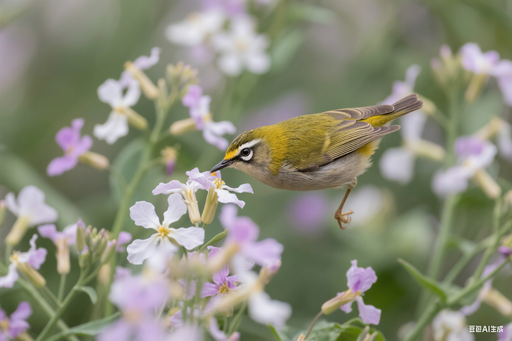

🚨 紧急联系方式
24小时兽医急诊
请提前查询并保存当地急诊电话
中毒急救热线
动物中毒控制中心
"在紧急情况下，冷静和正确的急救措施可能是挽救宠物鸟生命的关键。"
— 兽医急救专家🎯 急救基本原则
面对鸟类紧急情况时，遵循正确的急救原则至关重要：
1
保持冷静
慌乱只会让情况变得更糟，深呼吸并理性评估情况
2
确保安全
首先确保自己和鸟类的安全，避免进一步伤害
3
快速评估
迅速评估鸟类的意识状态、呼吸和明显外伤
4
立即行动
根据情况采取适当的急救措施，同时联系兽医
🩹 常见紧急情况处理
🩸 外伤出血
症状：明显的伤口、出血、羽毛沾血
急救措施：
- 用干净的纱布或毛巾轻压止血
- 避免使用棉花，纤维可能粘在伤口上
- 严重出血时立即送医
- 保持鸟类安静，减少活动
🦴 骨折或扭伤
症状：翅膀下垂、不能站立、明显疼痛
急救措施：
- 将鸟类放在小而安全的容器中限制活动
- 不要尝试自行固定骨折部位
- 保持环境温暖和安静
- 尽快送往兽医处
🫁 呼吸困难
症状：张嘴呼吸、呼吸急促、尾部随呼吸摆动
急救措施：
- 立即改善通风，确保空气流通
- 移除可能的刺激物（烟雾、化学品等）
- 保持环境安静，减少压力
- 如果是异物卡住，不要强行取出
☠️ 中毒症状
症状：呕吐、腹泻、抽搐、意识模糊
急救措施：
- 立即移除毒物来源
- 不要催吐，除非兽医指示
- 保存毒物样本或包装
- 立即联系中毒急救热线
🔥 烧伤或烫伤
症状：皮肤红肿、水泡、羽毛烧焦
急救措施：
- 用凉水（不是冰水）冲洗烧伤部位
- 不要使用冰块或油脂类物质
- 用干净的湿布覆盖伤口
- 立即送医治疗
🥶 体温过低
症状：身体发冷、反应迟钝、蜷缩成球
急救措施：
- 将鸟类移至温暖环境
- 用毛巾包裹保温
- 可使用加热垫（低温档）
- 避免直接加热，防止烫伤
🧰 急救包准备
准备一个专门的鸟类急救包，以备不时之需：
🩹 基础用品
- 无菌纱布和绷带
- 医用胶带
- 消毒棉签
- 生理盐水
- 一次性手套
🛠️ 工具设备
- 小剪刀（圆头）
- 镊子
- 小手电筒
- 体温计
- 注射器（喂药用）
💊 药品
- 止血粉
- 抗菌软膏
- 电解质溶液
- 兽医开具的常用药物
📋 其他物品
- 小毛巾
- 塑料袋
- 紧急联系电话清单
- 鸟类医疗记录副本
🚗 运送到兽医处
正确的运送方式对伤病鸟类的康复至关重要：
📦 准备运送容器
- 使用小而安全的纸箱或宠物运输箱
- 在底部铺上毛巾或纸巾
- 确保通风良好但避免过度通风
- 容器大小应限制鸟类过度活动
🌡️ 保持适宜环境
- 保持容器内温暖但不过热
- 避免阳光直射
- 保持安静，减少噪音和震动
- 不要频繁检查鸟类状况
⚠️ 急救禁忌
在急救过程中，以下行为可能造成更大伤害：
❌ 绝对不要做的事
- 不要给意识不清的鸟类喂水或食物
- 不要使用人类药物治疗鸟类
- 不要强行固定骨折部位
- 不要用嘴对嘴人工呼吸
- 不要在没有专业指导下催吐
- 不要忽视看似轻微的症状
📞 何时立即就医
以下情况需要立即寻求专业医疗帮助：
🔴 极紧急
- 严重出血不止
- 呼吸停止或极度困难
- 意识丧失或抽搐
- 明显的骨折或内伤
🟡 高度紧急
- 持续呕吐或腹泻
- 体温异常（过高或过低）
- 食欲完全丧失超过24小时
- 行为异常或极度虚弱
🏥 预防胜于治疗
最好的急救是预防紧急情况的发生：
🏠 环境安全
- 移除有毒植物和化学品
- 确保窗户和镜子的安全
- 检查笼子和玩具的安全性
- 控制室内温度和湿度
🔍 定期检查
- 每日观察鸟类行为和食欲
- 定期健康检查
- 及时更新疫苗接种
- 维护清洁的生活环境